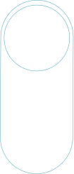
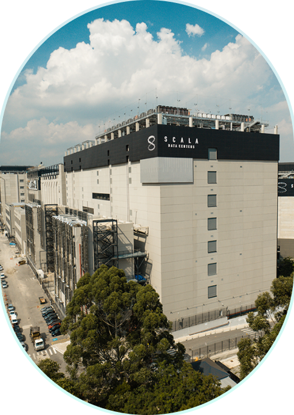
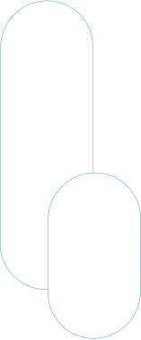
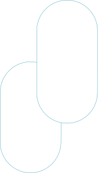
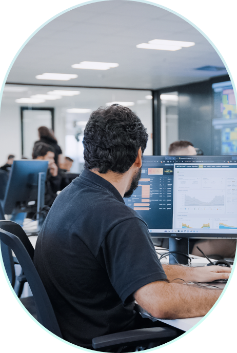

Soluções escaláveis para operações críticas
Colocation e Conectividade
Oferecemos modelos de implantação e operação que vão de Full Colocation a Build-to-Suit e Triple Net Lease, adaptando a infraestrutura às necessidades de cada cliente.
Estabilidade, Qualidade, Disponibilidade e Segurança
Com energia 100% limpa e renovável, infraestrutura própria e arquitetura de alta densidade, nossos data centers apoiam cargas de trabalho críticas com estabilidade, segurança e capacidade para crescer no longo prazo.

Presença estratégica para habilitar o futuro
Com presença nos principais mercados da América Latina, desenvolvemos uma plataforma de infraestrutura digital estrategicamente localizada, próxima a hubs de nuvem, cabos submarinos e ecossistemas de interconexão da região. Em operação, construção e desenvolvimento, nossos data centers combinam excelência operacional, alta densidade e energia renovável para acompanhar a evolução dos negócios dos nossos clientes.
0
data centers
em operação
0
países
na América Latina
+0M
m² em propriedades


Inteligência aplicada em cada camada
Do design à operação, combinamos engenharia, tecnologia e excelência operacional para transformar inovação em infraestrutura de alto desempenho. O resultado é uma plataforma mais eficiente, estável, e capaz de acelerar entregas com previsibilidade.
Sustentabilidade como princípio
A sustentabilidade faz parte da forma como planejamos, construímos e operamos nossa infraestrutura. Guiados por ambição climática, metas estruturadas e resultados concretos, promovemos o uso eficiente de recursos, responsabilidade social e uma governança sólida para gerar valor de longo prazo para clientes, comunidades e sociedade.
Notícias e Insights
Acompanhe notícias, estudos, reconhecimentos e movimentos estratégicos que refletem a atuação da Scala no avanço da infraestrutura digital da América Latina.